Fourier integral transform#
Homework#
Homework
Open both signals acquired in Task 2 in your programming environment of choice (e.g., Python).
Display and compare their amplitude and phase spectra.
Also generate the same signals synthetically (for example using
scipy.signal, or the LabVIEW signal generator). Compare the amplitude and phase spectra of the acquired and synthetic signals.
Prepare a short report (3 to 10 code cells in a Jupyter Notebook environment) that shows the task data (from the table) and that you have taken all the parameters and requirements of the task into account.
Submit the report in .pdf format (see the homework submission instructions).
Addendum: Investigate the time-shifting property of the Fourier transform, and:
estimate the time shift between the real and the generated synthetic signals.
Using the time-shifting property, align the acquired signals with the generated ones in the frequency domain.
Transform the aligned signals back to the time domain (
np.fft.irfft) and display the result of the alignment.
Note
The time-shifting property is described in lecture notes 3. Shifting a signal in time by \(t_0\) is described in the frequency domain by:
The Fourier transform is a mathematical tool that maps signals from the time domain to the frequency domain.
Note
The Fourier transform and its inverse are integral transforms, which you defined in the lectures:
Note
Real (measured) signals are usually not given as a function \(x(t)\), but as a time series of signal values measured at discrete time points, \(x(n\,\Delta t)\).
In practice, we will therefore often speak of the discrete Fourier transform (DFT), defined for a discretely sampled signal with a constant time step, whose result is a discrete frequency representation of the signal with a constant step in the frequency domain, \(X(k\,\Delta f)\).
The numerically efficient fast Fourier transform (FFT) algorithm is also of great importance in signal processing, as it enables the time-to-frequency transformation of acquired discrete signals in real time.
You will learn more about the DFT and FFT in one of the following lectures.
Fourier transform in Python#
Let us look at the use of the (discrete) Fourier transform algorithm implemented in NumPy and SciPy, using the example of a sinusoidal signal with amplitude \(A\) and ordinary frequency \(p\).
In the lectures you learned that:
and the Fourier transform of \(x(t)\) is:
Let us prepare a function for visualizing the Fourier transform of a sinusoidal signal:
import numpy as np
import matplotlib.pyplot as plt
plt.rcParams["figure.figsize"] = (15, 5)
def fourier_sin(A, p):
"""
Visualization of the Fourier transform of a sinusoidal signal with amplitude
`A` and frequency `p` Hz.
Returns the spectrum amplitude at frequency `p`.
"""
A_p = 1j*A/2
freq = np.array([-2*p, -p, 0, p, 2*p])
amp = np.array([0., A_p, 0, A_p, 0])
plt.axhline(y=0, c='k', lw=2)
plt.axvline(x=0, c='k', lw=1)
for i, x in (enumerate(freq)):
plt.plot([x, x], [0, np.abs(amp[i])], 'k', lw=2)
plt.plot(freq, np.abs(amp), 'ro', label='analytical amplitude spectrum')
plt.xlabel('$f [Hz]$')
plt.ylabel('$|X(f)|$')
p = 5
A = 10
fourier_sin(A, p)
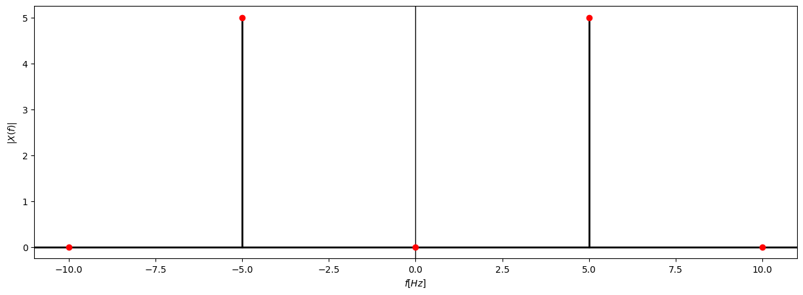
Let us prepare a sinusoidal signal and look at the DFT result:
dt = 1/(p*50)
t = np.arange(0, 1, dt)
x = A*np.sin(2*np.pi*t*p)
Computing the FFT of an arbitrary signal:
X = np.fft.fft(x)
freq = np.fft.fftfreq(len(t), dt)
Computing the FFT of a real signal (\(x(t) \in \mathcal{R}\)):
X_r = np.fft.rfft(x)
freq_r = np.fft.rfftfreq(len(t), dt)
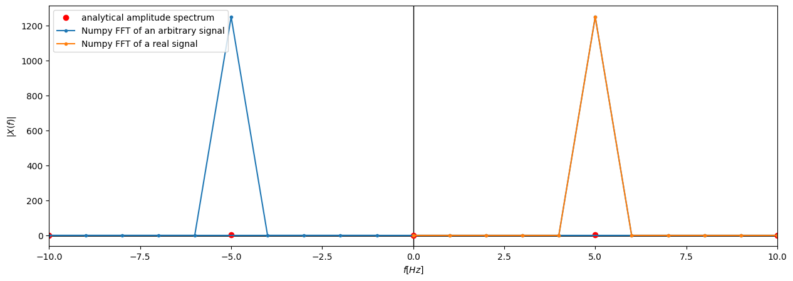
We observe that the theoretical and the obtained amplitudes do not match.
Task 1 (10 minutes)
Investigate how scaling (normalization) is implemented in the discrete Fourier transform in NumPy and extend the code above so that the obtained amplitudes match the theoretical ones.
Addendum: Investigate the options for increasing the frequency resolution (\(\downarrow \Delta f\)) when using the discrete Fourier transform. Which signal acquisition parameter is it related to? (Hint: the argument n of the function np.fft.rfft.)
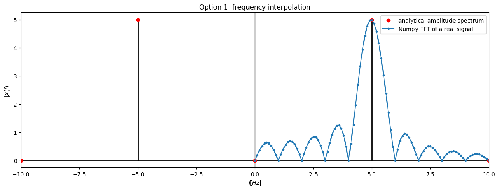
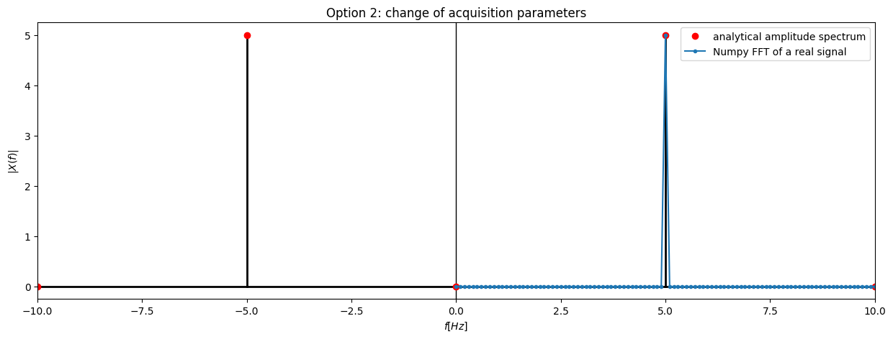
Note
You can find more details on the numerical computation of the Fourier transform and the DFT in practice in the additional lecture notes “From the Fourier series to the DFT in practice”.
DFT of a real signal#
Task 2 (30 min)
Using the signal generator and the Arduino acquisition system, prepare and acquire two signals of different shapes with the parameters from the data of homework 3, which you can find in Moodle.
For data acquisition you can use the LabVIEW program you prepared in the previous exercise, or the program you can find below.
Do not forget to modify the program before acquisition so that it:
works with your acquisition system (COM port setting, save location of the .lvm file),
if the program allows setting the sensitivity, set it to the value 1,
allows setting the segment duration (instead of the number of samples in a segment),
acquires the signal according to the parameters of the task.
You can solve the task in groups by dividing the work accordingly (setting up the signal generator, acquiring the signals).
You can find the basic instructions for using the signal generator in the notes of the previous laboratory exercise.
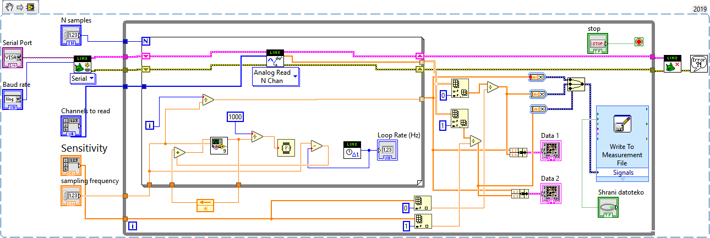
You also need the following subprogram to run it:
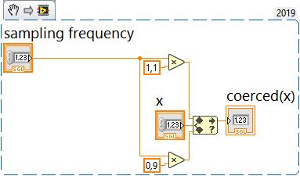
You can download both as a zip archive.
Processing the acquired signal#
Task 3 (15 min)
Load the sinusoidal signal acquired in the previous task into a Python program.
Determine the parameters (amplitude \(A\), frequency \(p\), phase shift \(\varphi\)) of the acquired signal (
scipy.optimize.curve_fit).Compare the amplitude spectrum of the acquired sinusoidal signal with the theoretical amplitude spectrum of the function \(A \, \sin(2\, \pi \, p \, t)\).
To read data saved in .lvm files, you can use the lvm_read package.
Let us look at an example of its use below.
import lvm_read
file = '../data/03/sinus.lvm'
data = lvm_read.read(file)
data['Segments']
1
A data segment is stored in a dictionary under a key equal to its sequential index. Each individual segment is also a dictionary, in which the raw stored data is accessed with the key 'data':
kanali = data[0]['data']
kanali.shape
(500, 2)
Each column of data represents one stored channel:
signal = kanali[:, 0]
signal.shape
(500,)
The time vector can be prepared from the known sampling frequency:
fs = 100 # samples / s
t = np.arange(len(signal)) / fs
<matplotlib.legend.Legend at 0x7f5e5517c2d0>
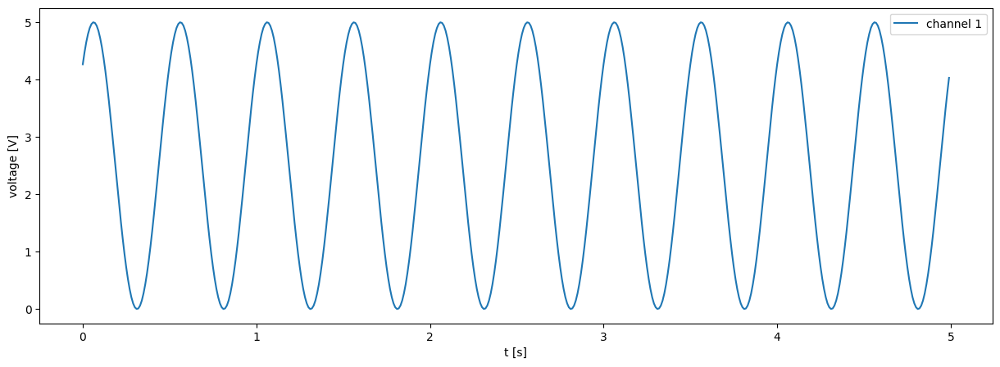
Determining the parameters of the acquired signal with scipy.optimize.curve_fit:#
from scipy.optimize import curve_fit
We define the model function of our signal, whose first parameter is the independent variable \(t\) and whose other arguments are the parameters to be found:
def model(t, A, p, phi, V_0):
"""
Model function `A*sin(2*pi*p*t + phi) + V_0` for the approximation.
"""
return A*np.sin(2*np.pi*p*t + phi) + V_0
Let us determine reasonable initial estimates:
A_0 = (np.max(signal) - np.min(signal)) / 2
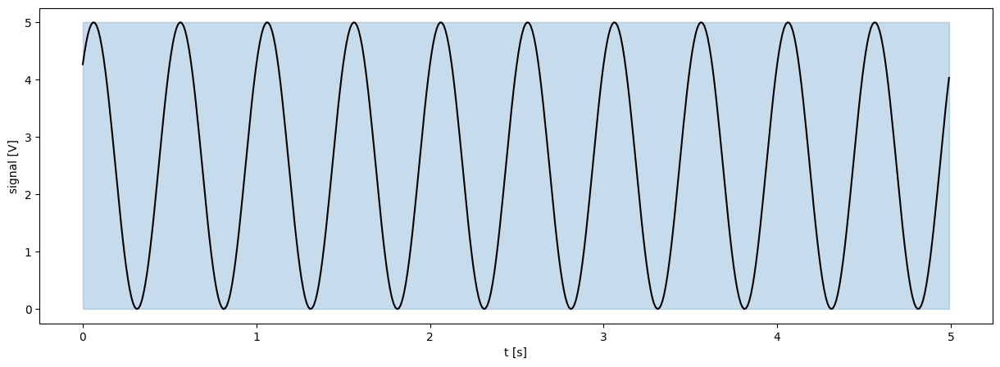
from scipy.signal import find_peaks
i_vrhov = find_peaks(signal)[0]
t_vrhov = t[i_vrhov]
p_0 = 1 / (t_vrhov[1] - t_vrhov[0])
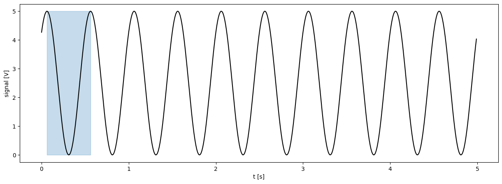
V_0 = np.mean(signal)
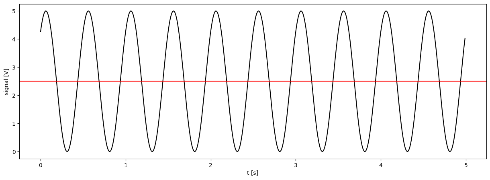
normal_signal = (signal - V_0) / A_0
phi_0 = np.arcsin(normal_signal[0])
45.003549449490734
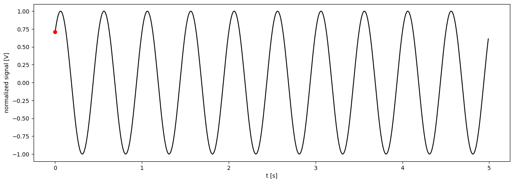
popt, pcov = curve_fit(model, t, signal, p0=[A_0, p_0, phi_0, V_0])
A, p, phi, V_0 = popt
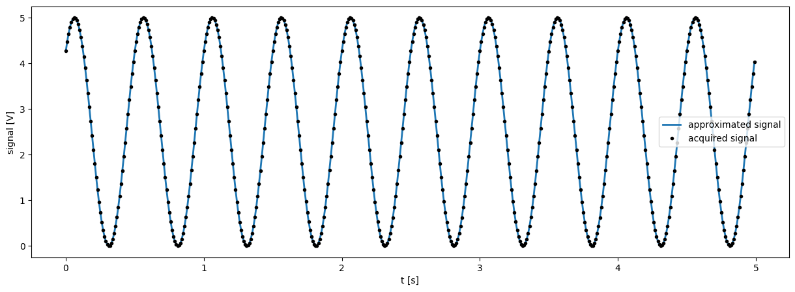
(Discrete) Fourier transform of the acquired signal#
S = np.fft.fft(signal) / len(t)
freq = np.fft.fftfreq(len(t), 1/fs)
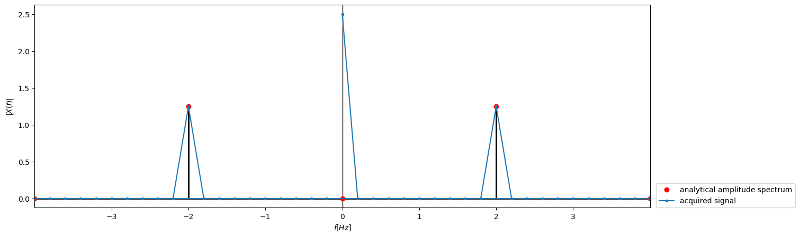
Removing the static (DC) component:
S_1 = np.fft.fft(signal - V_0) / len(t)
freq = np.fft.fftfreq(len(t), 1/fs)
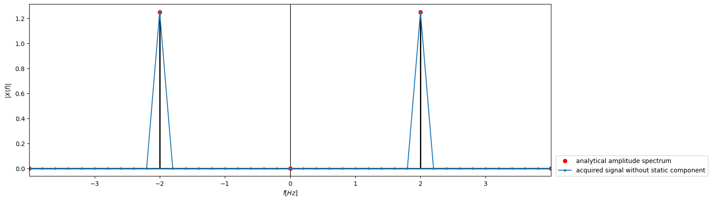
Often, for real signals, the amplitude spectrum is computed only at positive frequencies.
To preserve the energy of the signal, the obtained one-sided spectrum is scaled accordingly:
S_r = np.fft.rfft(signal - V_0) / len(t)
S_r[1:] *= 2
freq = np.fft.rfftfreq(len(t), 1/fs)
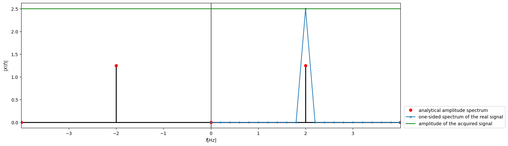
np.isclose(np.sum(np.abs(S_1)), np.sum(np.abs(S_r)), rtol=1e-4)
np.True_
Amplitude and phase spectrum of a real signal#
Let us look at an example of the amplitude and phase spectrum of a real signal with two harmonic components.
Signal parameters:
A1 = 1
A2 = 2
f1 = 1
f2 = 2
phi1 = np.pi/2
phi2 = np.pi/4
Sampling parameters:
fs = 50
dt = 1/fs
T = 5
t = np.arange(0, T*fs) * dt
The signal under consideration:
s1 = A1*np.cos(2*np.pi*f1*t + phi1)
s2 = A2*np.cos(2*np.pi*f2*t + phi2)
signal = s1 + s2
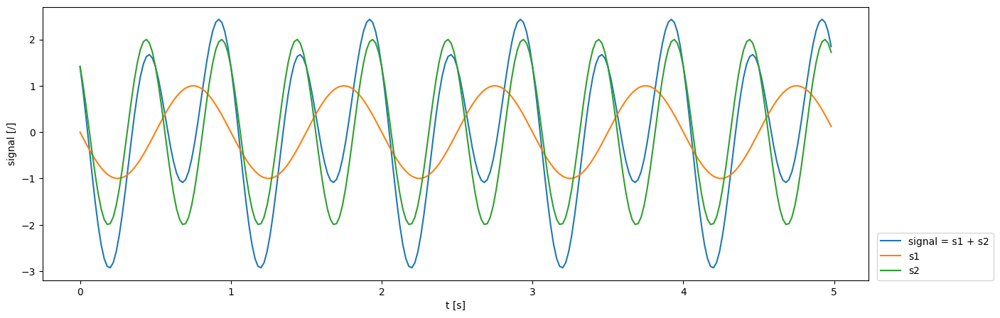
Fourier transform of the signal, normalization of the one-sided spectrum:
S = np.fft.rfft(signal, norm='forward')
S[1:] *= 2
freq = np.fft.rfftfreq(len(t), dt)
Fundamental frequencies of the components \(s_1\) and \(s_2\) of the signal under consideration:
i1 = np.argmin(np.abs(freq-1))
i2 = np.argmin(np.abs(freq-2))
freq[i1], freq[i2]
(np.float64(1.0), np.float64(2.0))
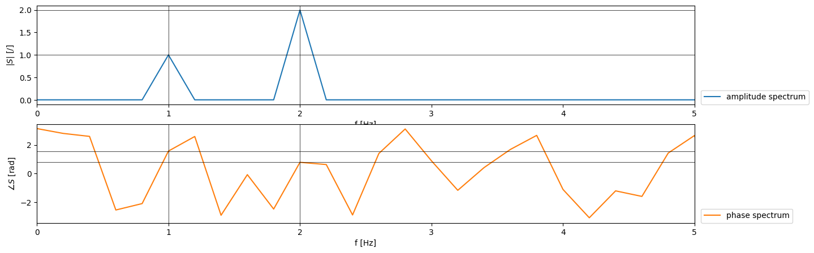
Comparison of the selected phase shifts of the signal and the values of the phase spectrum:
print(phi1, phi2)
print(np.angle(S[i1]), np.angle(S[i2]))
1.5707963267948966 0.7853981633974483
1.5707963267948966 0.7853981633974466